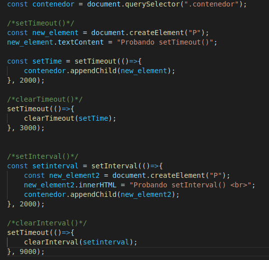

Lección 8 - Timers
Definición: Son funciones que nos permiten hacer trabajos con el Tiempo.
funciones:
-
setTimeout(()=>{codigo}, tiempo en milisegundos): Es una función que lleva a cabo una porción de codigo, luego de que
pasa el tiempo que le indiquemos.
-
clearTimeout('nombre de la variable que contiene la función setTimeout'): Esta función recibe una variable que tienga asignada
una función de setTimeout, esto cumple el objetivo de no ejecutar el codigo de setTimeout()
-
setInterval(()=>{codigo}, cada cuando queremos que se ejecute): Esta función tiene el mismo objetivo que setTimeout, la unica
diferencia es que el primero se ejcuta una sola vez luego del tiempo es especificado, en cambio, setInterval(), repite el codigo
infinitamente, cada cierto tiempo, dicho tiempo fue el que le indicamos.
-
clearInterval(): Al igual que clearTimeout(), borra la funcionalidad pero de la funcion setInterval().
Codigo:
